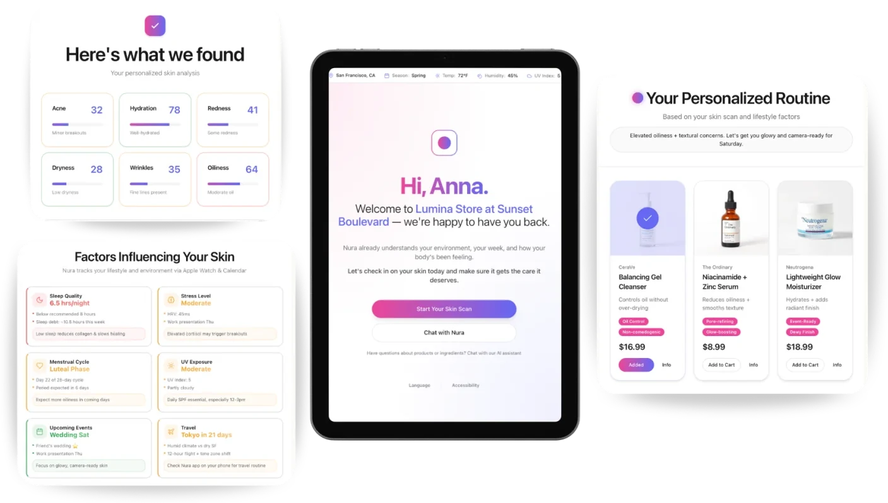

Nura · Project
A countertop device that reads your skin and formulates fresh skincare.
Nura reads how your skin is changing, along with signals like sleep and stress, and doses a personalized serum and moisturizer from eight NFC-tracked active cartridges. I designed it end to end, from 100+ interviews through industrial design, the companion app, and a 3D skin model.
- 100+user and expert interviews behind the requirements
- 8NFC-tracked active cartridges
- 5skin layers measured against your own baseline
- ~1Mprimitives in the on-device 3D skin model
The idea
Skin changes with seasons, stress, your cycle, travel, and sleep, but traditional skincare commits to one formula before it ever reaches you. Nura keeps its components separate, so what you put on your skin can change when your skin does.
How it works
What I did
100+ interviews
User and expert interviews defined the requirements, user flows, and interaction design for the device UI and app.
Industrial design to BOM
I led the industrial design, schematics, and bill of materials for the device and its eight-cartridge system.
A companion that personalizes
I designed and built the app, from UX flows to UI and design system, personalizing routines from HealthKit biomarkers (sleep, stress, HRV), environmental data, and skin scans.
Measured against you, not an average
On-device reconstruction using structure from motion and a ~1M-primitive Gaussian model measures five skin layers against your own baseline.
System
Earlier iteration
Before the countertop device, I built Nura for retail: an in-store diagnostic that scored skin with computer vision, read lifestyle factors, and generated a routine on the spot, plus a dashboard that turned those signals into insights for store teams.

What I learned
AI works best when the experience feels human.
People trust a diagnostic not because it's technical, but because they feel guided and understood. Designing warmth and clarity into the flow mattered as much as model accuracy.
Personalization lives beyond the model.
The best recommendations come from combining vision, lifestyle, environment, and behavior into one system. The intelligence emerges from how those pieces interact.
Next project